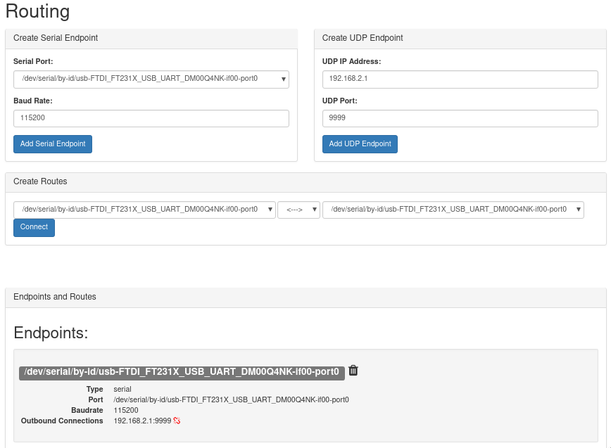
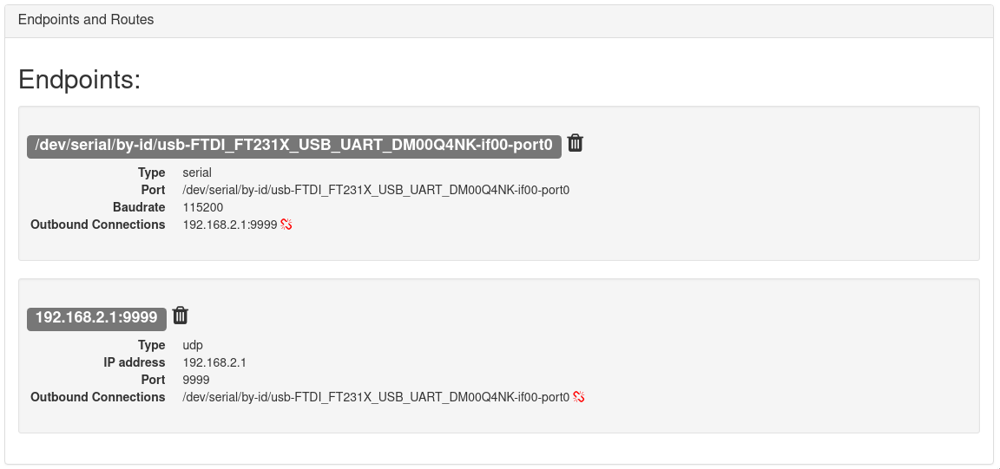
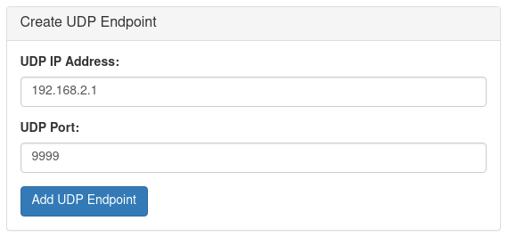

Routing
The Routing page can be used to route serial communications between serial devices and network ports. It can be used to create one-to-one, and one-to-many connections. The configuration on this page is persistent and loaded at boot. The configuration is stored in the file ~/routing.conf.
This program is written in python and is not optimized or well-suited for high-bandwidth applications. The maximum recommended baudrate is 115200. If high bandwidth routing is required, standard linux tools like
tty,socatandnetcatshould be used instead.

To use the companion routing tool:
- create one or more endpoints with your desired configuration
- add connections between the endpoints as you want
- remove connections by clicking the 'broken link' button next to the configuration
- remove endpoints by clicking the 'trash can' button next to the configuration

Endpoints
An endpoint can be a serial port or a network port. Create an endpoint by entering the desired port settings, and click 'create link'.
Serial Endpoints
Select one of the available serial ports from the drop down list, and choose the baudrate to use. The serial port must not be in use by another program! Click 'Add Serial Endpoint' to create the communication endpoint.

UDP Endpoints
Enter the ip address and UDP port to use. If the ip address is '0.0.0.0', it will bind the local port as a server. All other ip addresses will result in a client connection. Click 'Add UDP Endpoint' to create the communication endpoint.

Routes
Endpoints can be connected bidirectionally (typical), or with a one way connection. To begin routing communications between endpoints, choose the endpoints that you wish to connect, the direction to route communications, and click 'connect'.

Example configurations
Topside as UDP Server
To bridge serial communications between a device connected to the companion computer inside the ROV, and the existing network connection to the topside computer:
- Create a serial endpoint corresponding to the attached serial device and the desired serial baudrate
- Create a UDP endpoint using the topside computer IP address 192.168.2.1, and the port that the topside application will bind.
- Connect them bidirectionally
- The application on the topside computer should bind the UDP port as a server
To test the connection on a linux machine, bind to the port with "netcat" on the topside computer: nc -ulp <port>
Topside as UDP Server mode is not recommended for master-slave setups. For the connection to be properly stabilished, the serial device must send some data. Only then the connection is stabilished and the topside is able to send data to the companion.
This python script exemplifies how to run an UDP server with Python:
"""
Companion routing UDP server example.
This script Binds to an UDP port and receives data from the Companion at
a given port.
You should run this at your topside computer.
"""
import socket
UDP_IP = "192.168.2.1" # Topside (local) IP
UDP_PORT = 5555 # Topside (local) port to listen on
sock = socket.socket(socket.AF_INET, # Internet
socket.SOCK_DGRAM) # UDP
sock.bind((UDP_IP, UDP_PORT))
while True:
data, addr = sock.recvfrom(1024) # Buffer size is 1024 bytes
print(data.decode())
Companion as UDP Server
- Create a serial endpoint corresponding to the attached serial device and the desired serial baudrate
- Create a UDP endpoint using the 0.0.0.0 IP address, and the port that the server will bind to.
- Connect them bidirectionally
- The application on the topside computer should connect to 192.168.2.2 at the port chosen in step two
To test the connection on a linux machine, bind to the port with "netcat" on the topside computer: nc -u 192.168.2.2 <port>
This Python example shows how to communicate using these UDP ports:
"""
Companion routing UDP client example.
This script connects to a endpoint at the Companion exposed using the IP 0.0.0.0
and a given port. It then sends some data so the server knows it has a client
and starts relaying the serial data back at it.
You should run this at your topside computer.
"""
import socket
import time
UDP_IP = "192.168.2.2" # Remote (Companion's) IP to connect to
UDP_PORT = 5555 # Remote (Companion's) port to connect to
sock = socket.socket(socket.AF_INET, socket.SOCK_DGRAM)
try:
# Send something so the server knows where to reply to
sent = sock.sendto(b"hello", (UDP_IP, UDP_PORT))
# Loop receiving data
while True:
data, server = sock.recvfrom(4096)
print(data.decode())
time.sleep(0.01)
except Exception as e:
print(e)
finally:
sock.close()